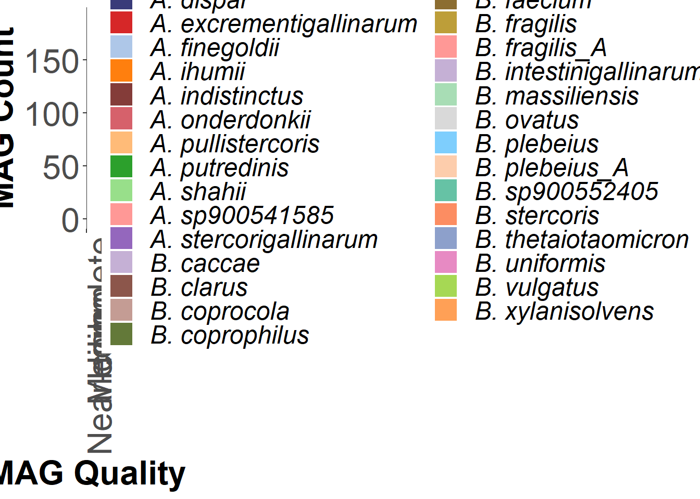
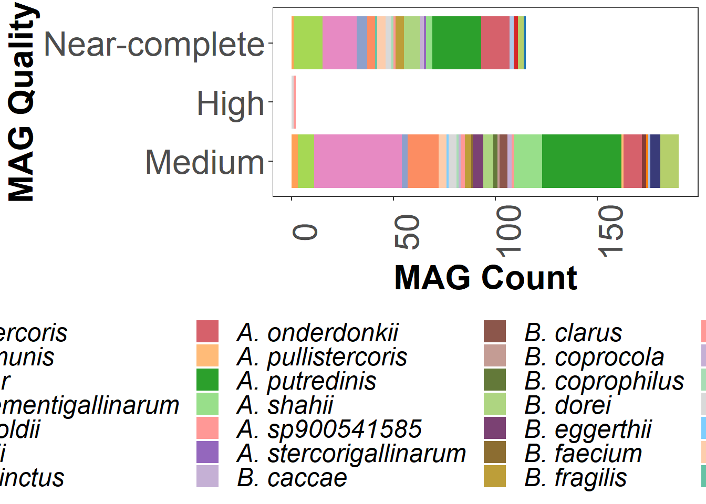
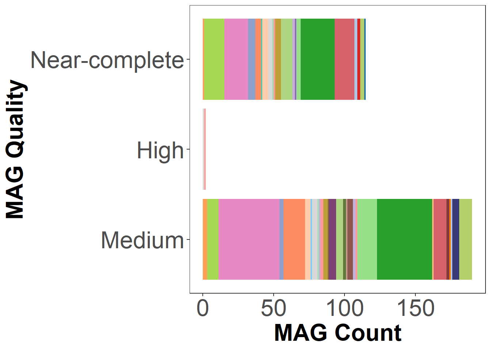
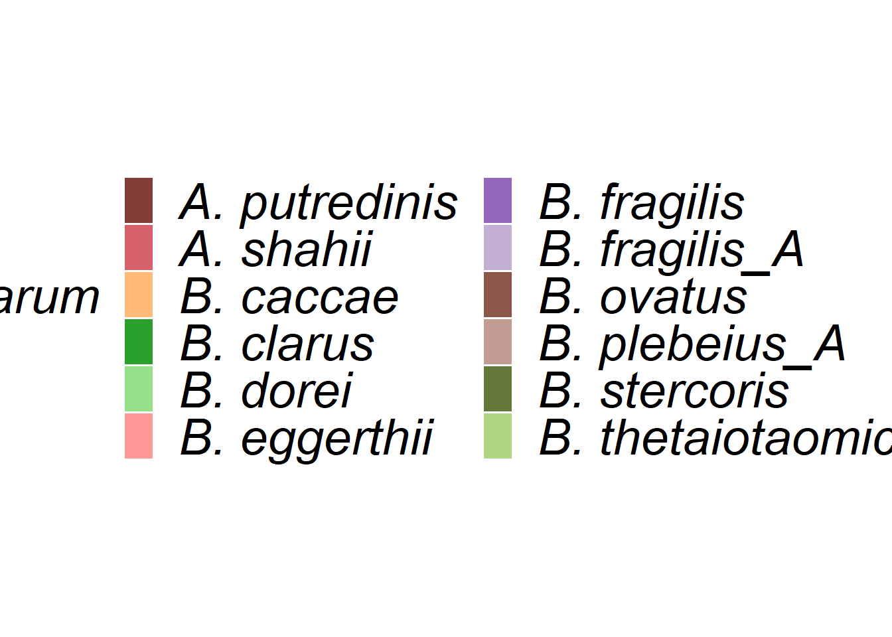
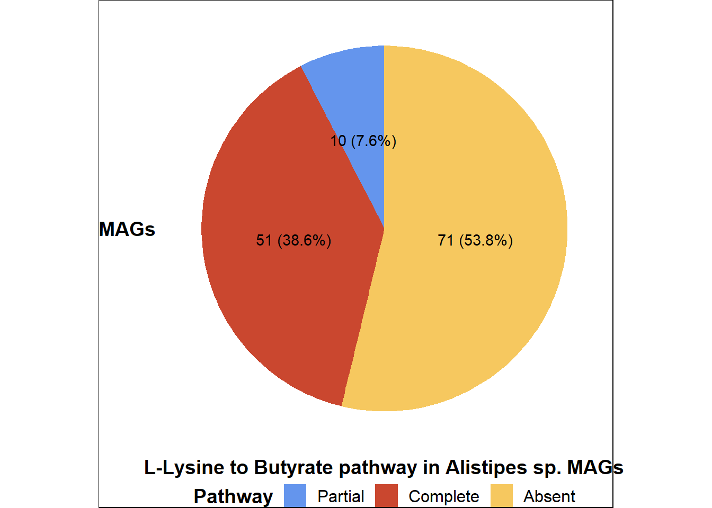
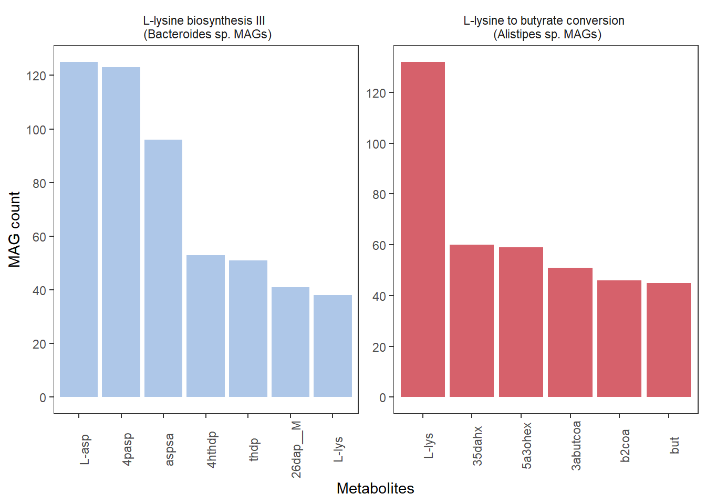

source(here('script','fig_plot.R'))Supplementary Figure 10 A B C D
Setup
Source scripts
Figure colours
cpal = c("#6495ed", "#ca472f", "#f6c85f", "#6f4e7c", "#ffa056", "#558254", "#4ad9e1")
col_vector <- c("#6495ed", "#ca472f", "#f6c85f", "#6f4e7c", "#ffa056", "#558254", "#4ad9e1", '#E762D7FF', "#8491B4FF", "#91D1C2FF", "#B09C85FF", "#FAFD7CFF", "#82491EFF")#, "#B7E4F9FF", "#E762D7FF", "#95CC5EFF")
color_palette <- c(
"#1F77B4", "#B5CF6B", "#393B79", "#D62728",
"#AEC7E8", "#FF7F0E", "#843C39", "#D6616B",
"#FFBB78", "#2CA02C", "#98DF8A", "#FF9896",
"#9467BD", "#C5B0D5", "#8C564B", "#C49C94",
#"#E377C2", "#F7B6D2", "#7F7F7F", "#C7C7C7",
#"#BCBD22", "#DBDB8D", "#17BECF", "#9EDAE5",
"#637939", "#AED581","#7B4173", "#8C6D31",
"#BD9E39","#FF9896", "#C5B0D5", "#A8DDB5",
"#D9D9D9", "#7ECEFD", "#FDCDAC", "#66C2A5",
"#FC8D62", "#8DA0CB", "#E78AC3", "#A6D854", "#ffa056"
)SuppFig10A-B
Read data
metadata <- readxl::read_xlsx(here('data','supplementary data file 1.xlsx')) %>%
filter(Ethnicity == 'Chinese')
names(metadata)[1] <- 'LibraryID'
names(metadata)[2] <- 'Age'
merged_lys <- read_tsv(here('data','sg90_cpe_lys.tsv'))Rows: 439 Columns: 297
── Column specification ────────────────────────────────────────────────────────
Delimiter: "\t"
chr (1): Pathway
dbl (296): MBS1215, MBS1216, MBS1217, MBS1218, MBS1219, MBS1220, MBS1222, MB...
ℹ Use `spec()` to retrieve the full column specification for this data.
ℹ Specify the column types or set `show_col_types = FALSE` to quiet this message.merged_lys_enriched <- merged_lys %>%
filter(grepl('L-lysine biosynthesis III', Pathway)) %>%
tibble::column_to_rownames('Pathway') %>%
replace(is.na(.), 0) %>%
tibble::rownames_to_column('Pathway') %>%
filter(grepl('\\|', Pathway))
merged_lys_species <- merged_lys_enriched %>%
pivot_longer(-Pathway) %>%
separate(Pathway, c('Pathway', 'Species'), sep = '\\|') %>%
separate(Species, c('Genus', 'Species'), sep = '\\.') %>%
mutate(Pathway = str_remove_all(Pathway, 'PWY-2942: '),
value = as.numeric(value) * (10**6))SuppFig10A - % Contribution of genus
merged_lys_genus <- merged_lys_species %>%
dplyr::select(-Species) %>%
dplyr::rename(LibraryID = 'name') %>%
group_by(LibraryID, Genus) %>%
summarize(value = sum(value)) %>%
mutate(Genus = str_remove_all(Genus, 'g__'))`summarise()` has grouped output by 'LibraryID'. You can override using the
`.groups` argument.merged_lys_genus_wide <- merged_lys_genus %>%
pivot_wider(names_from= 'LibraryID', values_from = 'value') %>%
tibble::column_to_rownames('Genus')
# Get top 15 genus by mean
means <- rowMeans(merged_lys_genus_wide)
genus_to_plot <- sort(means, decreasing = T)[1:15] %>%
as.data.frame() %>%
tibble::rownames_to_column('Genus') %>%
rename(mean = '.')
merged_lys_genus_wide_fil <- merged_lys_genus_wide[genus_to_plot$Genus, ]
# collapse the rest as others
others <- merged_lys_genus_wide %>%
filter(!(row.names(.) %in% genus_to_plot$Genus))
sums <- t(data.frame(colSums(others)))
rownames(sums) <- 'Other'
merged_lys_genus_wide_fil <- rbind(merged_lys_genus_wide_fil, sums)
# Get proportion per sample i.e. renormalize to 100%
merged_lys_genus_wide_fil <- data.frame(apply(merged_lys_genus_wide_fil, 2, function(x) x/sum(x)) * 100)
merged_lys_genus_to_plot <- tibble::rownames_to_column(merged_lys_genus_wide_fil) %>%
reshape2::melt()Using rowname as id variables# Get average proportion per genus per age group
total_genus <- merged_lys_genus_to_plot %>%
rename(LibraryID = 'variable') %>%
inner_join(metadata, by = 'LibraryID') %>%
filter(value > 0) %>%
mutate(AgeG = case_when(
Age >= 11 & Age <= 40 ~ '21-40',
Age >= 41 & Age <= 60 ~ '41-60',
Age >= 61 & Age <= 70 ~ '61-70',
Age >= 71 & Age <= 80 ~ '71-80',
Age >= 81 & Age <= 90 ~ '81-90',
Age >= 91 & Age <= 100 ~ '91-100')) %>%
dplyr::select(rowname, AgeG, value) %>%
group_by(AgeG, rowname) %>%
summarize(mean_per_ageg = mean(value))`summarise()` has grouped output by 'AgeG'. You can override using the
`.groups` argument.total_genus_perageG <- total_genus %>%
pivot_wider(names_from = AgeG, values_from = mean_per_ageg) %>%
tibble::column_to_rownames('rowname') %>%
replace(is.na(.), 0)
# renormalize within age group
genus_propn <- data.frame(apply(total_genus_perageG, 2, function(x) x/sum(x)) * 100)
# Arrange rowname based on mean
propn_to_plot <- genus_propn %>%
tibble::rownames_to_column('Genus') %>%
pivot_longer(-Genus, names_to = 'AgeG') %>%
mutate(Genus = str_replace(Genus, '_', ' ')) %>%
mutate(AgeG = str_remove(AgeG, 'X'),
AgeG = str_replace(AgeG, '[.]', '-'))
# rearrange genus based on mean
propn_to_plot <- propn_to_plot %>%
mutate(Genus = fct_rev(forcats::fct_reorder(Genus, value, .fun = mean)))
# put others at the bottom
propn_to_plot <- propn_to_plot %>%
mutate(Genus = fct_relevel(Genus, 'Other', after=15))
propn_plot <- propn_to_plot %>%
ggplot(aes(x = AgeG, y = value, fill = Genus)) +
geom_bar(stat = 'identity') +
labs(y = '% Contribution of Genus', fill = 'Genus') +
scale_fill_manual(values=color_palette) +
theme(legend.text = element_text(face = 'italic', size = 28),
legend.position = 'bottom',
legend.title = element_text(size=28),
axis.text = element_text(size = 28),
axis.title = element_text(size = 28)) +
guides(fill = guide_legend(ncol = 3))
template_to_save(propn_plot, 'SuppFig10A.png',height = 35, width = 40)SuppFig10B
# remove genus name from species
merged_lys_species <- merged_lys_species %>%
dplyr::select(-Genus) %>%
mutate(Species = str_remove_all(Species, 's__'),
Species = str_replace_all(Species, '_', ' ')) %>%
dplyr::select(-Pathway)
merged_lys_species_wide <- merged_lys_species %>%
pivot_wider(names_from= 'name', values_from = 'value') %>%
tibble::column_to_rownames('Species')
enriched_species <- c('Escherichia unclassified','Alistipes unclassified',
'Bacteroides dorei','Bacteroidales bacterium ph8',
'Alistipes senegalensis','Alistipes shahii',
'Alistipes onderdonkii','Alistipes indistinctus',
'Bacteroides xylanisolvens','Klebsiella pneumoniae',
'Escherichia coli','Parabacteroides merdae',
'Bacteroides clarus')
depleted_species <- c('Eubacterium hallii','Ruminococcus obeum',
'Dorea longicatena','Coprococcus comes',
'Dorea formicigenerans','Bifidobacterium pseudocatenulatum',
'Faecalibacterium prausnitzii','Lachnospiraceae bacterium 1 1 57FAA',
'Roseburia inulinivorans','Eubacterium ventriosum',
'Bilophila unclassified','Coprococcus catus',
'Parasutterella excrementihominis','Ruminococcus lactaris',
'Lachnospiraceae bacterium 5 1 63FAA','Ruminococcus gnavus',
'Ruminococcus bromii','Ruminococcus callidus',
'Megamonas funiformis','Roseburia intestinalis',
'Ruminococcus torques','Eggerthella unclassified',
'Eubacterium rectale','Megamonas unclassified',
'Eubacterium eligens',
'Roseburia hominis','Ruminococcus sp 5 1 39BFAA')
# manually pick up the species
means <- rowMeans(merged_lys_species_wide)
species_to_plot <- sort(means, decreasing = T)[1:176] %>%
as.data.frame() %>%
tibble::rownames_to_column('Species') %>%
rename(mean = '.')
# get prevalence
merged_lys_species_to_plot_prev <- merged_lys_species %>%
filter(value > 0) %>%
group_by(Species) %>%
count() %>%
#rename(Species = 'rowname') %>%
ungroup() %>%
left_join(species_to_plot, by = 'Species') %>%
# species to plot - prevalence >= 50 samples
filter(n > 50)
merged_lys_species_wide_fil <- merged_lys_species_wide[merged_lys_species_to_plot_prev$Species, ]
## convert to long
merged_lys_species_to_plot <- tibble::rownames_to_column(merged_lys_species_wide_fil) %>%
reshape2::melt()Using rowname as id variablesmerged_lys_species_to_plot_with_age <- merged_lys_species_to_plot %>%
rename(LibraryID = 'variable') %>%
inner_join(metadata, by = 'LibraryID') %>%
ungroup()
# Run glm
merged_lys_species_for_glm <- merged_lys_species_to_plot_with_age %>%
pivot_wider(names_from= 'rowname', values_from = 'value') %>%
replace(is.na(.), 0)
species_to_run <- merged_lys_species_to_plot_with_age %>%
pull(rowname) %>% as.character() %>%
unique()
species_with_age <- lapply(merged_lys_species_for_glm[, species_to_run],
function(x)
coefficients(summary(
glm(
x/(10^6) ~ merged_lys_species_for_glm$Age,
data = merged_lys_species_for_glm
)
)))
# Function to parse GLM results
param_with_age_correction <- function(org_list_to_use, resultssum, fname){
pval <- NULL
org_list <- NULL
estimate <- NULL
stderror <- NULL
betaestimate <- NULL
stderror <- NULL
for (i in seq_along(1:length(resultssum)))
{
#print(paste0(org_list_to_use[i], ' ', resultssum[[i]][35]))
if ("merged_lys_species_for_glm$Age" %in% rownames(resultssum[[i]])){
pval <-
rbind(pval, resultssum[[i]]["merged_lys_species_for_glm$Age",][4])
org_list <- rbind(org_list, org_list_to_use[i])
betaestimate <-
rbind(betaestimate, resultssum[[i]]["merged_lys_species_for_glm$Age",][1])
stderror <-
rbind(stderror, resultssum[[i]]["merged_lys_species_for_glm$Age",][2])
}
else{
print(org_list_to_use[i])}
}
all_df <- data.frame(org_list, pval, betaestimate, stderror)
colnames(all_df) <- c('org_list', 'pval', 'betaestimate', 'stderror')
all_df$padj <- p.adjust(all_df$pval, 'fdr')
#write.csv(all_df, here('results',fname), row.names = FALSE)
return(all_df)
}
# adjust for multiple corrections
species_with_age_results <- param_with_age_correction(species_to_run,
species_with_age, 'lys_with_species')
enriched_depleted_species <- species_with_age_results %>%
filter(org_list %in% c(enriched_species, depleted_species)) %>%
mutate(Color = case_when(org_list %in% enriched_species ~ 'red',
org_list %in% depleted_species ~ 'blue')) %>%
mutate(Signif = case_when(pval < 0.05 ~ '< 0.05',
TRUE ~ '> 0.05')) %>%
arrange(betaestimate)
beta_plot <- enriched_depleted_species %>%
ggplot(aes(x = betaestimate, y = reorder(org_list, betaestimate), col = Signif)) +
geom_point(size = 4, alpha = 0.85) +
geom_errorbar(aes(xmin = betaestimate - stderror,
xmax = betaestimate + stderror),
width = 0.2,
size = 1.4) +
geom_vline(xintercept = 0, linetype = 'dashed', size = 1.3) +
labs(col = 'p-value') +
scale_color_manual(values = c('#009E73', 'grey')) +
theme(axis.text.y = element_text(size = 14, face = 'italic',
colour = enriched_depleted_species$Color),
legend.text = element_text(size = 14)) +
ylab('')Warning: Using `size` aesthetic for lines was deprecated in ggplot2 3.4.0.
ℹ Please use `linewidth` instead.Warning: Vectorized input to `element_text()` is not officially supported.
ℹ Results may be unexpected or may change in future versions of ggplot2.template_to_save(beta_plot, 'SuppFig10B.png', width=20, height=14)SuppFig10C-E
Read data
gtdb <- read.csv(here('data','gtdbk_consolidated.tsv'), sep='\t') #has only sg90 data
bins_info <- read.csv(here('data','bins_info_sg90.tsv'), sep='\t') #has all bins data
metadata <- read.csv(here('data','metadata.csv'))
sg90_bins <- bins_info %>%
dplyr::rename('LibraryID'='sample') %>%
dplyr::left_join(metadata, by='LibraryID') %>%
dplyr::rename('user_genome'='ID') %>%
mutate(user_genome = str_replace(user_genome, '.fa','')) %>%
left_join(gtdb %>% dplyr::select(user_genome, classification), by='user_genome') %>%
filter(Cohort =='SG90') %>% filter(pass.GUNC == 'True') %>%
mutate(AgeG = case_when(
Age >= 11 & Age <= 40 ~ '21-40',
Age >= 41 & Age <= 60 ~ '41-60',
Age >= 61 & Age <= 70 ~ '61-70',
Age >= 71 & Age <= 80 ~ '71-80',
Age >= 81 & Age <= 90 ~ '81-90',
Age >= 91 & Age <= 100 ~ '91-100'))MAGs Figure 10C
(Made png without legend in landscape and copied the legend from pptx)
# Bacteroides without ageG
species_to_plot <-
sg90_bins %>%
separate(classification,
into = c("kingdom", "phylum", "class", "order", "family", "genus", "species"), sep = ";") %>%
mutate(species=str_replace_all(species, 's__', '')) %>%
mutate(genus=str_replace_all(genus, 'g__', '')) %>%
mutate(MIMAG_renamed = case_when(MIMAG=='HIGH'~'High',
MIMAG=='LOW'~'Low',
MIMAG=='MEDIUM'~'Medium',
MIMAG=='NEARCOMPLETE'~'Near-complete')) %>%
filter(genus == 'Alistipes'|genus=='Alistipes_A'|genus=='Bacteroides'|genus=='Phocaeicola') %>%
dplyr::group_by(AgeG, MIMAG_renamed, species) %>%
dplyr::summarise(n=n()) %>%
mutate(MIMAG_renamed = factor(MIMAG_renamed, levels=c('Medium', 'High', 'Near-complete'))) %>%
mutate(species = str_replace(species, 'Phocaeicola', 'Bacteroides'))`summarise()` has grouped output by 'AgeG', 'MIMAG_renamed'. You can override
using the `.groups` argument.species_to_highlight <- c('A. shahii', 'A. onderdonkii', 'A. senegalensis',
'A. indistinctus',
'B. clarus', 'B. dorei', 'B. xylanisolvens')
species_plot <- species_to_plot %>%
mutate(species = str_replace(species, 'Alistipes_A', 'A.'),
species = str_replace(species, 'Alistipes', 'A.'),
species = str_replace(species, 'Bacteroides', 'B.')) %>%
# mutate(species = ifelse(species %in% species_to_highlight,
# paste0(species, '*'),
# species)) %>%
ggplot(., aes(x=MIMAG_renamed, y=n, fill=species))+
geom_bar(stat='identity') +
#,aes(size = thick_border), color = 'black') +
#scale_size_manual(values = c("normal" = 0, "thick" = 1.5)) +
scale_alpha_manual(values = c(0.5, 1)) +
theme_bw() +
theme(axis.text = element_text(size=24),
axis.text.x = element_text(angle=90),
legend.text = element_text(size=18, face='italic'),
legend.title = element_text(size=24, face='bold'),
axis.title = element_text(size=24, face='bold'),
strip.text = element_text(size=18, face='bold'),
legend.position = 'right',
panel.grid=element_blank())+
scale_fill_manual(values=color_palette) +
ylab('MAG Count') +
xlab('MAG Quality') +
labs(fill='Species') +
scale_y_continuous(breaks=scales::pretty_breaks(n=7))
print(species_plot)
# template_to_save(bacteroides_plot, fname = 'bacteroides_plot_woagegroup.png', width =32,height = 20)
# makeedtiableppt(bacteroides_plot, fname='bacteroides_plot_woagegroup.pptx', width=6, height=4)
# template_to_save(bacteroides_plot, fname = 'bacteroides_plot_woagegroup_regroup.png', width =8,height =6)
# makeedtiableppt(bacteroides_plot, fname='bacteroides_plot_woagegroup.pptx', width=6, height=4)
species_plot_landscape <- species_plot + coord_flip() +
theme(legend.position = "bottom")
print(species_plot_landscape)
# template_to_save(bacteroides_plot_landscape, fname = 'mags_quality_landscape.png', width =8,height =6)
# makeedtiableppt(bacteroides_plot_landscape, fname='mags_quality_landscape.pptx', width=8, height=4)
species_plot_landscape_wolegend <- species_plot + coord_flip() +
theme(legend.position = "none",
axis.text.x = element_text(angle=0))
print(species_plot_landscape_wolegend)
#template_to_save(bacteroides_plot_landscape_wolegend, fname = 'bacteroides_plot_landscape_wolegend.png', width =6,height =4)
#makeedtiableppt(bacteroides_plot_landscape, fname='mags_quality_landscape.pptx', width=6, height=4)Save space for suppfig10C
- merge all the different qualities into 1 stacked bar plot
- separate alistipes and bacteroides
- take top 10 most abundant
species_plot <- species_to_plot %>%
ungroup() %>%
group_by(species) %>%
summarize(total_mags = sum(n)) %>%
ungroup() %>%
mutate(Genus = case_when(str_detect(species, 'Alistipes') ~ 'Alistipes',
TRUE ~ 'Bacteroides')) %>%
group_by(Genus) %>%
slice_max(order_by = total_mags, n = 10) %>%
filter(total_mags > 1) %>%
mutate(species = str_replace(species, 'Alistipes_A', 'A.'),
species = str_replace(species, 'Alistipes', 'A.'),
species = str_replace(species, 'Bacteroides', 'B.')) %>%
ggplot(aes(y = Genus, x = total_mags, fill = species)) +
geom_bar(stat = 'identity') +
labs(x = '') +
theme_bw() +
theme(axis.text = element_text(size=32),
axis.text.y = element_text(face = 'italic'),
legend.text = element_text(size=28, face='italic'),
legend.title = element_text(size=28, face='bold'),
axis.title = element_text(size=32, face='bold'),
strip.text = element_text(size=18, face='bold'),
legend.position = 'bottom',
panel.grid=element_blank(),
rect = element_rect(fill = 'transparent'))+
scale_fill_manual(values=color_palette) +
xlab('MAG Count') +
labs(fill='') +
scale_x_continuous(breaks=scales::pretty_breaks(n=7)) +
guides(fill = guide_legend(ncol = 4))
legend_bar <- ggpubr::get_legend(species_plot)
ggpubr::as_ggplot(legend_bar)
template_to_save(species_plot, 'SuppFig10C.png', width =50, height = 35)Alistipes pie chart Supplementary Figure 10D
Lysine to but pathway completeness ## Stacked chart
prokka <- read_parquet(here('data','prokka_annotations_alltsvs.flat.parquet'))
lysine <- c('5.4.3.2' ,'5.4.3.3' ,'1.4.1.11' ,'2.3.1.247' ,'4.3.1.14' ,
'2.8.3.9' ,'2.8.3.8' )
prokka_lys_mod <- prokka %>%
group_by(sample) %>%
summarize(
count_present = sum(lysine %in% EC_number),
total_lysine = length(unique(lysine))
) %>%
mutate(
all_present = count_present == total_lysine,
some_present = count_present > 0 & count_present < total_lysine,
none_present = count_present == 0
) %>%
separate(sample,into=c("LibraryID", "rest"), sep='\\.', remove=FALSE) %>%
left_join(metadata, by='LibraryID') %>%
filter(Cohort == 'SG90') Warning: Expected 2 pieces. Additional pieces discarded in 3747 rows [1, 2, 3, 4, 5, 6,
7, 8, 9, 10, 11, 12, 13, 14, 15, 16, 17, 18, 19, 20, ...].prokka_lys_mod_bin_name <- prokka_lys_mod %>%
dplyr::rename('user_genome'='sample') %>%
dplyr::left_join(gtdb, by='user_genome') %>%
filter(!is.na(classification)) %>%
left_join(sg90_bins %>% dplyr::select(c('user_genome','pass.GUNC')),
by='user_genome') %>%
filter(!is.na(pass.GUNC))
alistipes_prokka_lys_mod_bin_name <- prokka_lys_mod_bin_name %>%
filter(genus=='Alistipes'|genus=='Alistipes_A')
ali_to_plot <- alistipes_prokka_lys_mod_bin_name %>%
dplyr::select(user_genome, all_present, some_present, none_present, species, sample)
mdf_ali_to_plot <- ali_to_plot %>%
reshape2::melt(id.vars = c('user_genome', 'sample','species')) %>%
mutate(present = ifelse(value,1, 0))
# summary_ali <- mdf_ali_to_plot %>% group_by(variable, species) %>%
# summarise(sp = sum(present)) %>%
# mutate(completeness = case_when(variable=='all_present'~'Complete',
# variable=='some_present'~'Partial',
# variable=='none_present'~'Absent')) %>%
# ggplot(., aes(x=completeness, y=sp, fill=species))+
# geom_bar(stat='identity') +
#
# theme_bw() +
# theme(axis.text = element_text(size=14),
# legend.text = element_text(size=12, face='italic'),
# legend.title = element_text(size=14, face='bold'),
# axis.title = element_text(size=14, face='bold'),
# strip.text = element_text(size=14, face='bold'),
# legend.position = 'right')+
# scale_fill_manual(values=col_vector) +
# ylab('Lysine pathway Count') +
# xlab('Pathway completeness') +
# labs(fill='Species')
#print(summary_ali)
# template_to_save(summary_ali, fname = 'lysine_pathway_completeness.png', width =8,6)
# makeedtiableppt(summary_ali, fname='lysine_pathway_completeness.pptx', width=6, height=4)
# summary_ali_bottom <- summary_ali + theme(legend.position = 'bottom')
# template_to_save(summary_ali_bottom, fname = 'lysine_pathway_completeness_bottom.png', width =17,13)
# makeedtiableppt(summary_ali_bottom, fname='lysine_pathway_completeness_bottom.pptx', width=6, height=4)Pie chart
alistipes_lystobut <- mdf_ali_to_plot %>% group_by(variable, species) %>%
summarise(sp = sum(present)) %>%
mutate(completeness = case_when(variable=='all_present'~'Complete',
variable=='some_present'~'Partial',
variable=='none_present'~'Absent')) %>%
dplyr::filter(sp>0) %>%
mutate(completeness = factor(completeness, levels=c('Partial', 'Complete', 'Absent'))) %>%
group_by(completeness) %>%
summarise(pc = sum(sp))`summarise()` has grouped output by 'variable'. You can override using the
`.groups` argument.alistipes_lystobut <- alistipes_lystobut %>%
mutate(percentage = pc / sum(pc) * 100)
alistipes_lystobut_image <- ggplot(alistipes_lystobut, aes(x="", y=pc, fill=factor(completeness)))+
geom_bar(stat='identity') +coord_polar(theta="y")+ theme_void() +
theme(axis.text = element_text(size=14),
legend.text = element_text(size=12),
legend.title = element_text(size=14, face='bold'),
axis.title = element_text(size=14, face='bold'),
legend.position='bottom') +
scale_fill_manual(values=cpal) +
ylab('L-Lysine to Butyrate pathway in Alistipes sp. MAGs') +
xlab('MAGs') +
geom_text(aes(label = paste0(pc, " (", round(percentage, 1), "%)")),
position = position_stack(vjust = 0.5)) +
labs(fill='Pathway')+
theme(axis.text = element_blank(), axis.ticks = element_blank(), panel.grid = element_blank(), plot.background = element_rect(fill = "white"))
print(alistipes_lystobut_image)
template_to_save(alistipes_lystobut_image, 'SuppFig10D_1.png',15,15)
makeedtiableppt(alistipes_lystobut_image, 'SuppFig10D_1.pptx',3,3)Bacteroides pie chart Supplementary Figure 10D
Stacked chart
L-lysine biosynthesis III was obtained from the Pathway tools. 3.5.99.- was not included since it was spontaneous
lysine_biosyn <- c('2.7.2.4' ,'1.2.1.11' ,'4.3.3.7' ,'1.17.1.8','1.4.1.16' ,'4.1.1.20')
prokka_lys_biosyn <- prokka %>%
group_by(sample) %>%
summarize(
count_present = sum(lysine_biosyn %in% EC_number),
total_lysine = length(unique(lysine_biosyn))
) %>%
mutate(
all_present = count_present == total_lysine,
some_present = count_present > 0 & count_present < total_lysine,
none_present = count_present == 0
) %>%
separate(sample,into=c("LibraryID", "rest"), sep='\\.', remove=FALSE) %>%
left_join(metadata, by='LibraryID') %>%
filter(Cohort == 'SG90') Warning: Expected 2 pieces. Additional pieces discarded in 3747 rows [1, 2, 3, 4, 5, 6,
7, 8, 9, 10, 11, 12, 13, 14, 15, 16, 17, 18, 19, 20, ...].prokka_lys_biosyn_bin_name <- prokka_lys_biosyn %>%
dplyr::rename('user_genome'='sample') %>%
dplyr::left_join(gtdb, by='user_genome') %>%
filter(!is.na(classification))%>%
left_join(sg90_bins %>% dplyr::select(c('user_genome','pass.GUNC')),
by='user_genome') %>%
filter(!is.na(pass.GUNC))
bacteroides_prokka_lys_biosyn_bin_name <- prokka_lys_biosyn_bin_name %>%
filter(genus=='Bacteroides')
bac_to_plot <- bacteroides_prokka_lys_biosyn_bin_name %>%
dplyr::select(user_genome, all_present, some_present, none_present, species, sample)
mdf_bac_to_plot <- bac_to_plot %>%
reshape2::melt(id.vars = c('user_genome', 'sample','species')) %>%
mutate(present = ifelse(value,1, 0))
summary_bac_lysbiosyn <- mdf_bac_to_plot %>% group_by(variable, species) %>%
summarise(sp = sum(present)) %>%
mutate(completeness = case_when(variable=='all_present'~'Complete',
variable=='some_present'~'Partial',
variable=='none_present'~'Absent')) %>%
dplyr::filter(sp>0) %>%
mutate(completeness = factor(completeness, levels=c('Partial', 'Complete', 'Absent'))) %>%
ggplot(., aes(x=completeness, y=sp, fill=species))+
geom_bar(stat='identity') +
theme_bw() +
theme(axis.text = element_text(size=14),
axis.text.x = element_text(angle=90),
legend.text = element_text(size=12, face='italic'),
legend.title = element_text(size=14, face='bold'),
axis.title = element_text(size=14, face='bold'),
strip.text = element_text(size=14, face='bold'),
legend.position = 'right')+
scale_fill_manual(values=color_palette) +
ylab('Count') +
ggtitle('L-Lysine biosynthesis III') +
xlab('Pathway completeness') +
labs(fill='Species')`summarise()` has grouped output by 'variable'. You can override using the
`.groups` argument.# print(summary_bac_lysbiosyn)
#
# template_to_save(summary_bac_lysbiosyn, fname = 'lysinebiosyn3_pathway_completeness_onlybac.png', width =8, height = 6)
# makeedtiableppt(summary_bac_lysbiosyn, fname='lysinebiosyn3_pathway_completeness_onlybac.pptx', width=6, height=4)##Pie chart
bacteroides_lysin3 <- mdf_bac_to_plot %>% group_by(variable, species) %>%
summarise(sp = sum(present)) %>%
mutate(completeness = case_when(variable=='all_present'~'Complete',
variable=='some_present'~'Partial',
variable=='none_present'~'Absent')) %>%
dplyr::filter(sp>0) %>%
mutate(completeness = factor(completeness, levels=c('Partial', 'Complete', 'Absent'))) %>%
group_by(completeness) %>%
summarise(pc = sum(sp))`summarise()` has grouped output by 'variable'. You can override using the
`.groups` argument.bacteroides_lysin3 <- bacteroides_lysin3 %>%
mutate(percentage = pc / sum(pc) * 100)
lysine3_bacteroides <- ggplot(bacteroides_lysin3, aes(x="", y=pc, fill=factor(completeness)))+
geom_bar(stat='identity') +coord_polar(theta="y")+ theme_void() +
theme(axis.text = element_text(size=14),
legend.text = element_text(size=12),
legend.title = element_text(size=14, face='bold'),
axis.title = element_text(size=14, face='bold'),
legend.position='bottom') +
scale_fill_manual(values=cpal) +
ylab('L-lysine biosynthesis pathway III in Bacteroides MAGs') +
xlab('MAGs') +
geom_text(aes(label = paste0(pc, " (", round(percentage, 1), "%)")),
position = position_stack(vjust = 0.5)) +
labs(fill='Pathway')+
theme(axis.text = element_blank(), axis.ticks = element_blank(), panel.grid = element_blank(), plot.background = element_rect(fill = "white"))
template_to_save(lysine3_bacteroides, 'SuppFig10D_2.png',15,15)
makeedtiableppt(lysine3_bacteroides, 'SuppFig10D_2.pptx',3,3)First we need to create a reaction network based on results from minpath
There are 304 bins [all incl GUNC fail], 257 [GUNC pass]
# reaction_link <- read.csv(here('data','rxn_formula_excel.csv'), sep=',')
# enz <- read.csv(here('data','reaction-links.tsv'), sep='\t')
# rxnid <- reaction_link %>% dplyr::left_join(enz)
# rxnid$EC <- str_replace_all(rxnid$EC, 'EC-', '')
# file_paths <- list.files(here('data', 'reachability_analysis','minpath_report'),full.names = TRUE)
#
# # For loop to process each file
# for (file_path in file_paths) {
# # Read the file
# file_data <- readLines(file_path)
#
# # Process the lines into a dataframe
# processed_data <- file_data %>%
# # Convert to dataframe with one column
# data.frame(line = ., stringsAsFactors = FALSE) %>%
# # Use regular expressions to extract relevant parts
# mutate(
# EC = sub("^(\\S+).*", "\\1", line),
# hits = as.integer(sub("^\\S+ hits (\\d+).*", "\\1", line)),
# description = sub("^\\S+ hits \\d+ # (.+)$", "\\1", line)
# ) %>%
# # Select the columns we want
# select(EC, hits, description) %>%
# left_join(rxnid, by = 'EC', relationship = "many-to-many") %>%
# filter(!is.na(RXNID))
#
# # Write the processed dataframe to CSV
# csv_file <- paste0(tools::file_path_sans_ext(basename(file_path)), ".csv")
# write.csv(processed_data, here('data', 'reachability_analysis','DETAILS', csv_file))
#
# # Write the Name column to rxn file
# rxn_file <- paste0(tools::file_path_sans_ext(basename(file_path)), ".rxns")
# writeLines(processed_data$Name, here('data', 'reachability_analysis','RXNS', rxn_file))
#
# cat("Files generated for", file_path, "\n")
# }Run reachability - 10E
#
import os
import networkx as nx
import re
import metquest
import pdb
import pandas as pd
def extract_substring(s):
match = re.match(r"^(([^.]+\.){2}[^.]+)", s)
return match.group(1) if match else s
bacteroides_mags = r['bacteroides_prokka_lys_biosyn_bin_name$user_genome']
alistipes_mags = r['alistipes_prokka_lys_mod_bin_name$user_genome']
all_files = os.listdir(r['here()'] + '/data/reachability_analysis/RXNS/')
all_files_gunc_true = []
print(all_files)for files in all_files:
if extract_substring(files) in bacteroides_mags or extract_substring(files) in alistipes_mags:
all_files_gunc_true.append(files)
print(len(all_files_gunc_true)) #257full_paths = [os.path.join(r['here()'] + '/data/reachability_analysis/RXNS/', file) for file in all_files_gunc_true]
dict_produ ={}
for i in range(len(full_paths)):
#full_paths[i] = 'C:/Users/raarthi/Desktop/SG90_1922024_Scripts/SG90_finalcodes/data/reachability_analysis/RXNS/MBS1222.bin.7.ec.minpath.details.rxns'
with open(full_paths[i], 'r') as f:
all_lines = f.read().splitlines()
G = nx.DiGraph()
reaction_node = []
#doc = libsbml.SBMLDocument()
#model = doc.createModel()
for x, line in enumerate(all_lines):
reaction_node.append('R'+str(x))
rxn = 'R'+str(x+1)
G.add_node(rxn, bipartite=1)
# Split the line into reactants and products
if '<->' in line:
reactants, products = line.strip().split('<->')
reversible = True
elif "←" in line:
products, reactants = line.strip().split('←')
reversible = True
elif "=" in line:
reactants, products = line.strip().split(' = ')
reversible = True
else:
reactants, products = line.strip().split(' -> ')
reversible = False
reactants1 = [r.strip() for r in reactants.split(' + ')]
products1 = [p.strip() for p in products.split(' + ')]
cleaned_reactants = []
for compound in reactants1:
compound = compound.strip()
# Remove any stoichiometric coefficient using regex
cleaned_reactants.append(re.sub(r'^\d+\s+', '', compound))
cleaned_products = []
for compound in products1:
compound = compound.strip()
# Remove any stoichiometric coefficient using regex
cleaned_products.append(re.sub(r'^\d+\s+', '', compound))
# if rxn=='R1260':
# pdb.set_trace()
# print(cleaned_products)
# print(cleaned_reactants)
for item in cleaned_reactants:
# if rxn=='R1260':
# #print(item)
# pass
G.add_node(item, bipartite=0)
G.add_edges_from([(item, rxn)])
for pdt in cleaned_products:
# if rxn=='R1260':
# #print(pdt)
# pass
G.add_node(pdt, bipartite=0)
G.add_edges_from([(rxn, pdt)])
if reversible == True:
rxn_r = rxn + '_R'
for item in cleaned_reactants:
# if rxn=='R1260':
# #print(item)
# pass
G.add_edges_from([(rxn_r, item)])
for pdt in cleaned_products:
# if rxn=='R1260':
# #print(pdt)
# pass
G.add_edges_from([(pdt, rxn_r)])
if extract_substring(full_paths[i].split('/')[-1]) in bacteroides_mags:
#pdb.set_trace()
seed_mets = set(['ATP', 'NADPH', 'H+', 'NAD+', 'H2O', 'biotin','coenzyme A', 'NAD(P)H','NAD','NAD(P)','ammonium', 'CO2','oxidized ferredoxin [iron-sulfur] cluster','oxidized flavodoxin', 'pyruvate','reduced electron-transfer flavoprotein', 'oxidized electron-transfer flavoprotein',"acetoacetyl-CoA", "alpha-D-glucopyranose","acetoacetate", "succinyl-CoA", 'L-aspartate' ])
print(extract_substring(full_paths[i].split('/')[-1]))
print('L-aspartate' in seed_mets)
else:
seed_mets = set(['ATP','NADPH', 'H+', 'NAD+', 'H2O', 'biotin','coenzyme A', 'NAD(P)H','NAD','NAD(P)','ammonium', 'CO2',
'oxidized ferredoxin [iron-sulfur] cluster','oxidized flavodoxin', 'pyruvate',
'reduced electron-transfer flavoprotein', 'oxidized electron-transfer flavoprotein', "acetoacetyl-CoA", "alpha-D-glucopyranose","acetoacetate", "succinyl-CoA",'L-lysine'])
#print(extract_substring(full_paths[i].split('/')[-1]), seed_mets)
lb_m, status_dict, scope_org = metquest.forward_pass(G, seed_mets)
dict_produ[full_paths[i].split('/')[-1]] = scope_org # if not '(S)-3-aminobutanoyl-CoA' in scope_org:
# print('(S)-3-aminobutanoyl-CoA not in' + full_paths[i])
df = pd.DataFrame.from_dict(dict_produ, orient='index').transpose()
dfReachability plot
mets_reached <- py$df
mdf_mets <- mets_reached %>% t() %>% melt() %>%
dplyr::rename('user_genome'='Var1')
mdf_mets$user_genome <- str_replace_all(mdf_mets$user_genome, '.ec.minpath.details.rxns', '')
mdf_mets <- mdf_mets %>% left_join(sg90_bins, by='user_genome')
#unique(mdf_mets$user_genome) 257
needed_mets <- c('(S)-5-amino-3-oxohexanoate',
'(3S,5S)-3,5-diaminohexanoate',
'(S)-3-aminobutanoyl-CoA',
'butanoyl-CoA',
'butanoate',
'L-aspartate',
'L-aspartyl-4-phosphate',
'L-aspartate 4-semialdehyde',
'(2S,4S)-4-hydroxy-2,3,4,5-tetrahydrodipicolinate',
'(S)-2,3,4,5-tetrahydrodipicolinate',
'meso-diaminopimelate','L-lysine')
alistipes_mets <- mdf_mets %>%
filter(value %in% needed_mets) %>%
separate(classification,
into = c("kingdom", "phylum", "class", "order", "family", "genus", "species"), sep = ";") %>%
mutate(species=str_replace_all(species, 's__', '')) %>%
mutate(genus=str_replace_all(genus, 'g__', ''))
level_order <- c( 'L-aspartate', 'L-aspartyl-4-phosphate',
'L-aspartate 4-semialdehyde',
'(2S,4S)-4-hydroxy-2,3,4,5-tetrahydrodipicolinate',
'(S)-2,3,4,5-tetrahydrodipicolinate',
'meso-diaminopimelate', 'L-lysine','(3S,5S)-3,5-diaminohexanoate',
'(S)-5-amino-3-oxohexanoate','(S)-3-aminobutanoyl-CoA',
'butanoyl-CoA','butanoate')
mets_abbreviated_level <- c('L-asp', '4pasp', 'aspsa','4hthdp','thdp','26dap__M',
'L-lys', '35dahx','5a3ohex', '3abutcoa','b2coa','but')
alistipes_mets <- alistipes_mets %>%
dplyr::mutate(mets_abbreviated=case_when(value=='L-lysine'~'L-lys',
value=='(3S,5S)-3,5-diaminohexanoate'~'35dahx',
value == 'butanoyl-CoA'~'b2coa',
value== '(S)-3-aminobutanoyl-CoA'~'3abutcoa',
value == 'butanoate'~'but',
value== '(S)-5-amino-3-oxohexanoate'~'5a3ohex',
value=='L-aspartate'~'L-asp',
value=='L-aspartyl-4-phosphate'~'4pasp',
value== 'L-aspartate 4-semialdehyde'~'aspsa',
value=='(2S,4S)-4-hydroxy-2,3,4,5-tetrahydrodipicolinate'~'4hthdp',
value=='(S)-2,3,4,5-tetrahydrodipicolinate'~'thdp',
value=='meso-diaminopimelate'~'26dap__M'
)) %>%
dplyr::mutate(pathway_name =case_when(genus=='Bacteroides'~'L-lysine'))
# stacked_plot_alistipes <- alistipes_mets %>% dplyr::group_by(mets_abbreviated, species, genus) %>%
# summarise(n=n()) %>%
# mutate(species=str_replace_all(species, 's__', '')) %>%
# ggplot(., aes(y= n, x=factor(mets_abbreviated, level = mets_abbreviated_level), fill=species)) +
# geom_col() +
# xlab('Metabolites')+
# facet_grid(~genus, scales='free')+
# theme(axis.text.x = element_text(angle=90)) +
# scale_fill_manual(values=color_palette) +
# theme(axis.text = element_text(size=14),
# legend.text = element_text(size=12, face='italic'),
# legend.title = element_text(size=14, face='bold'),
# axis.title = element_text(size=14, face='bold'),
# strip.text = element_text(size=14, face='bold'),
# legend.position = 'right')+
# ylab('Reachability frequency') +
# labs(fill='Species')
#
# print(stacked_plot_alistipes)
#
# template_to_save(stacked_plot_alistipes, 'stacked_plot_alistipes.png', width = 10, height = 6)
# makeedtiableppt(stacked_plot_alistipes, fname ='stacked_plot_alistipes.pptx', width = 8, height = 4 )
# Bacteroides
lys_biosyn_mets <- c("L-asp","thdp", "aspsa","4pasp","26dap__M",
"4hthdp", "L-lys")
bacteroides_reachability <- alistipes_mets %>% dplyr::filter(genus=='Bacteroides') %>%
dplyr::filter(mets_abbreviated %in% lys_biosyn_mets) %>%
mutate(Pathway = 'L-lysine biosynthesis III \n (Bacteroides sp. MAGs)')
# Alistipes
but_biosyn_mets <- c('L-lys', '35dahx','5a3ohex', '3abutcoa','b2coa','but')
alistipes_reachability <- alistipes_mets %>% dplyr::filter(genus=='Alistipes'|genus=='Alistipes_A') %>%
dplyr::filter(mets_abbreviated %in% but_biosyn_mets) %>%
mutate(Pathway = 'L-lysine to butyrate conversion \n (Alistipes sp. MAGs)')
# Plot
reachability <- rbind(bacteroides_reachability, alistipes_reachability)
reachability <- reachability %>%
mutate(col1 = gsub("Alistipes_A", "Alistipes", genus))
reachability_plot <- reachability %>% group_by(mets_abbreviated, col1, Pathway) %>%
summarise(n=n()) %>%
ggplot(., aes(x=factor(mets_abbreviated, level = mets_abbreviated_level), y=n, fill=Pathway)) +
geom_col() +
facet_wrap(.~Pathway, scales = 'free') +
scale_y_continuous(breaks=scales::pretty_breaks(n=6)) +
xlab('Metabolites') +
ylab('MAG count') +
theme_bw()+
theme(axis.text.x = element_text(angle=90)) +
scale_fill_manual(values=c("#AEC7E8", "#D6616B")) +
theme(legend.position = "none",
panel.grid = element_blank(),
strip.background = element_blank())`summarise()` has grouped output by 'mets_abbreviated', 'col1'. You can
override using the `.groups` argument.print(reachability_plot)
template_to_save(reachability_plot, 'SUppFig10E.png', height=6, width=12)
makeedtiableppt(reachability_plot, 'SUppFig10E.pptx', height=6, width=12)